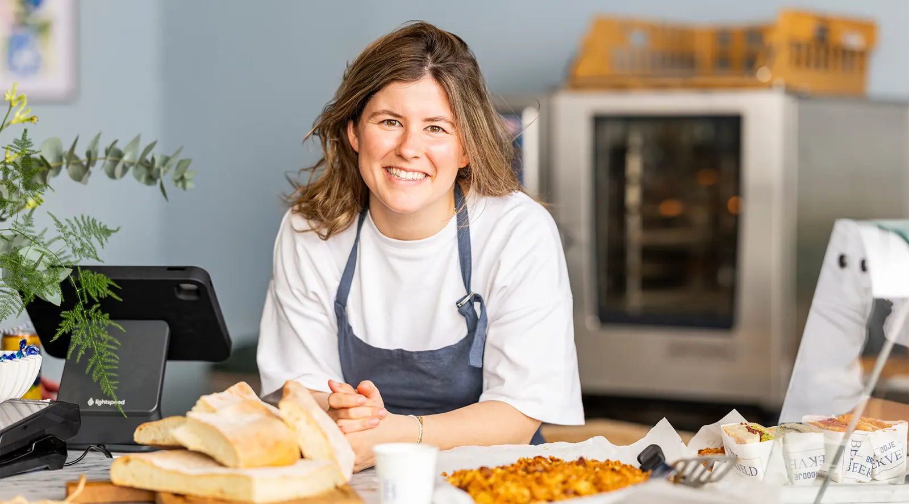
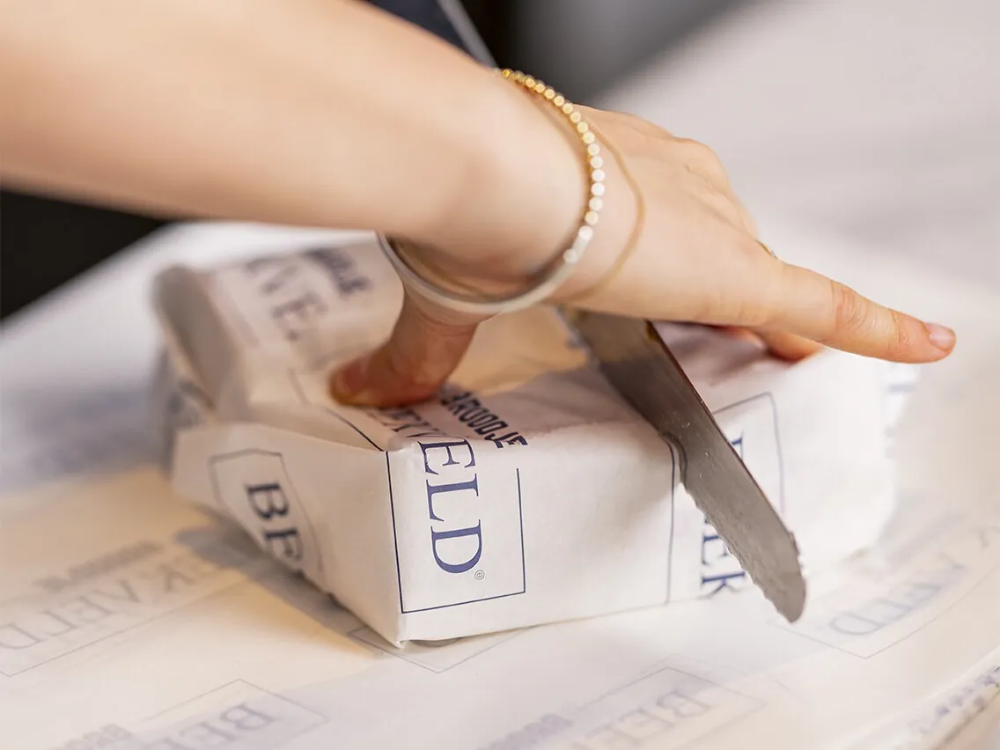
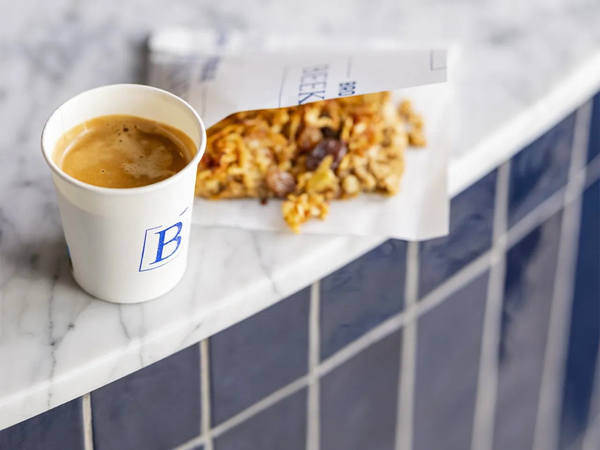
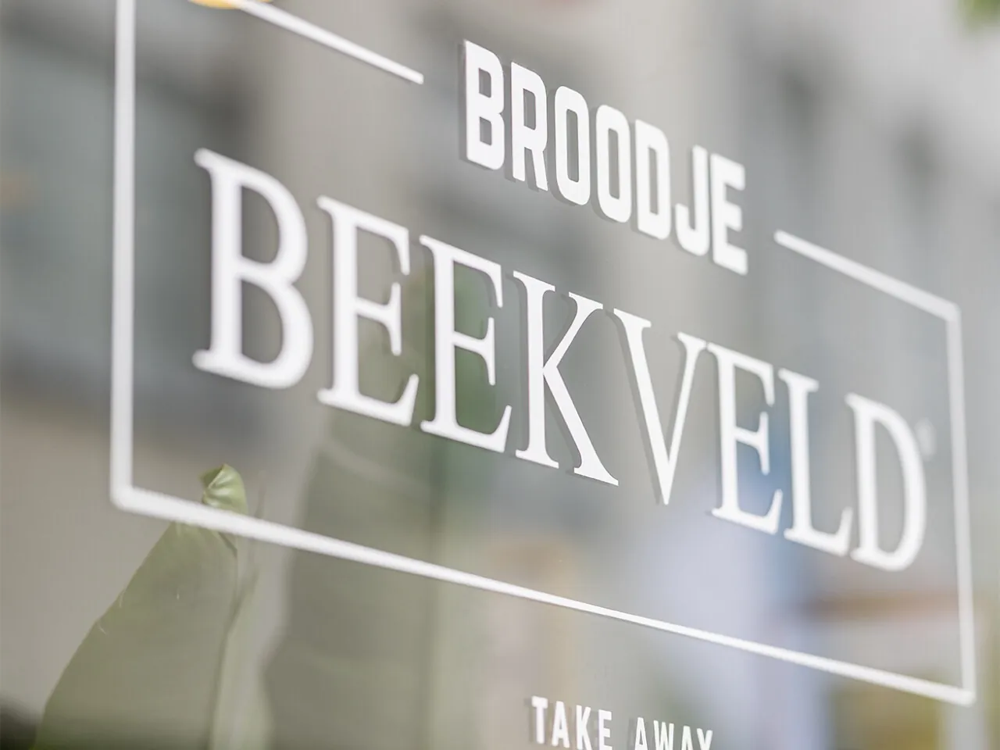
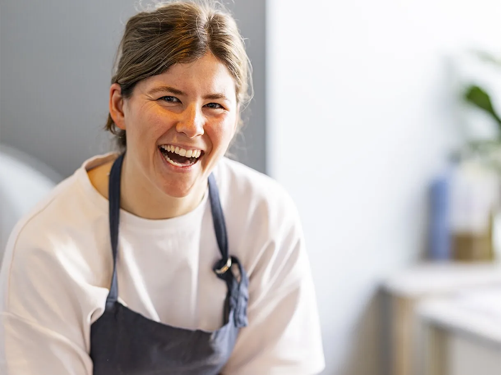

Precies zoals die Pinterest-broodjes
Ken je die Pinterestfoto's van heerlijk gevulde broodjes die in tweeën zijn gedeeld? Nou, dit is het! Wij hadden de tonijn en een broodje met aubergine. Heerlijk knapperig en vers.

Broodje Dorus: beste allround broodje van Den Bosch volgens Bossche Buik. En 5,0 uit 33 Google-reviews.
Lies, Hendrik, Boedie, Leen, Trees en Dorus: elk broodje draagt de naam van iemand die belangrijk is voor Emma. Haar dappere opa. Haar broertje. De straat waar ze is geboren.
De kaart wisselt elke twee maanden met het seizoen mee, dus er is altijd iets nieuws te proberen. Alles op schiacciata, rijkelijk belegd en ingepakt in eigen papier.


De huisgemaakte appelkoek is een van de bestsellers van de zaak; kom op tijd, want hij verdwijnt voordat je het weet. En de koffie? Precies zoals 'ie bedoeld is.
Van Lies tot Dorus: de hele kaart staat online, met alle prijzen erbij.
Vanaf twintig minuten na nu, in kwartierstappen, op het moment dat jou uitkomt.
Je bestelling staat klaar in de Stoofstraat 6. Betalen doe je in de zaak, met pin of contant.
Bestellen powered by Mettafel

Ken je die Pinterestfoto's van heerlijk gevulde broodjes die in tweeën zijn gedeeld? Nou, dit is het! Wij hadden de tonijn en een broodje met aubergine. Heerlijk knapperig en vers.
Tussen het winkelen door hier broodjes gehaald. We werden snel en vriendelijk geholpen. De broodjes zijn rijkelijk belegd en smaken heerlijk. Dikke tip!
Hoewel de rij misschien lang lijkt, worden de broodjes ontzettend snel en met veel liefde en aandacht gemaakt. Laat je dus zeker niet afschrikken! Wij zijn blij dat jullie er zijn.
Er werd goed meegedacht met intoleranties en het personeel is superleuk en vriendelijk. Het brood is enorm vers en knapperig en de toppings zijn smaakvol en rijkelijk belegd.
Heerlijke en verse broodjes, bereid met een glimlach. Een mooie nieuwe toevoeging aan Den Bosch voor iedereen die op zoek is naar een lekkere take-away lunch.
Fantastisch broodje gegeten. Eindelijk een fijne broodjeszaak in Den Bosch! Ondanks de drukte bleef het personeel enthousiast en vriendelijk.
Het brood is heerlijk vers en goed belegd. De eigenaresse staat de broodjes zelf te maken en dat merk je aan de aandacht en kwaliteit. Ik kijk nu al uit naar het nieuwe menu!
In tijden niet meer zo'n lekker broodje afgehaald! Alles smaakte vers en goed verzorgd. Een absolute aanrader en ik kom hier zeker terug.

Emma's ouders hadden jarenlang eetcafé Beekveld in de Kruisstraat. Als klein meisje liep ze er al rond met een broodmandje, en via een vijfsterrenhotel in Portugal kwam ze terug naar Den Bosch. Sinds mei 2026 maakt ze in de Stoofstraat de cirkel rond, met broodjes vernoemd naar haar familie.
Kies je broodjes op de kaart, kies een afhaaltijd en je bestelling staat klaar als jij binnenkomt. Betalen doe je in de zaak. Of kom gewoon langs; de rij gaat sneller dan je denkt.